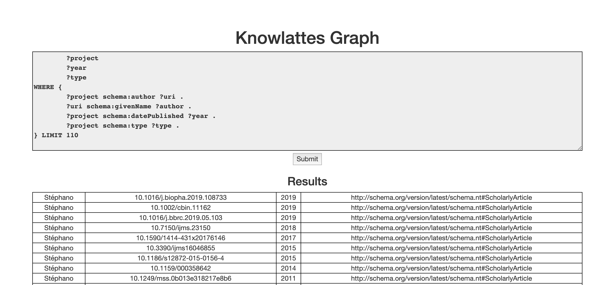

Knowlattes Graph
About
Knowlattes graph project is a undergrad project of creating a knowledge graph from lattes, Brazil Scientific plataform, where you can easily query. As lattes implements some hard methods of querying theire own plataform, this is a simple case with few CV's just to give an ideia of what could have been implemented
The project has the power to read the plataform, parse the HTML pages and to add the triples on a knowledge graph.
